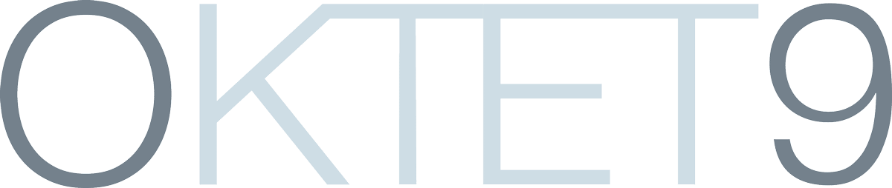
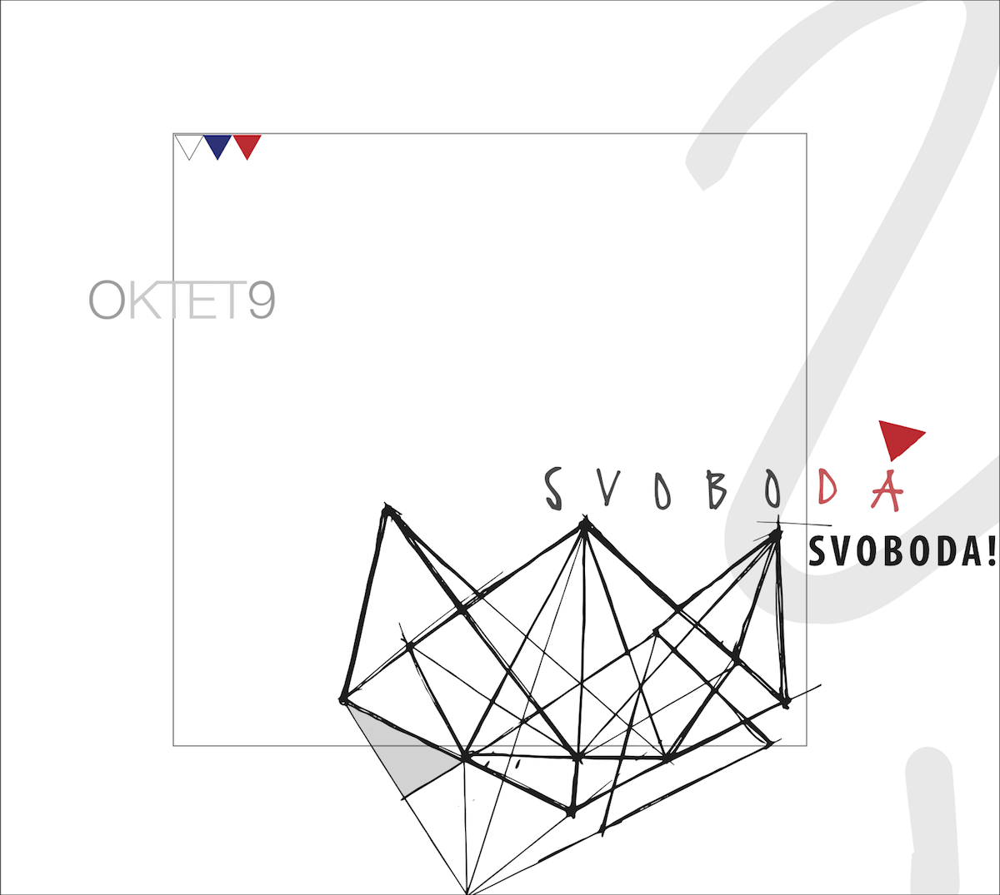
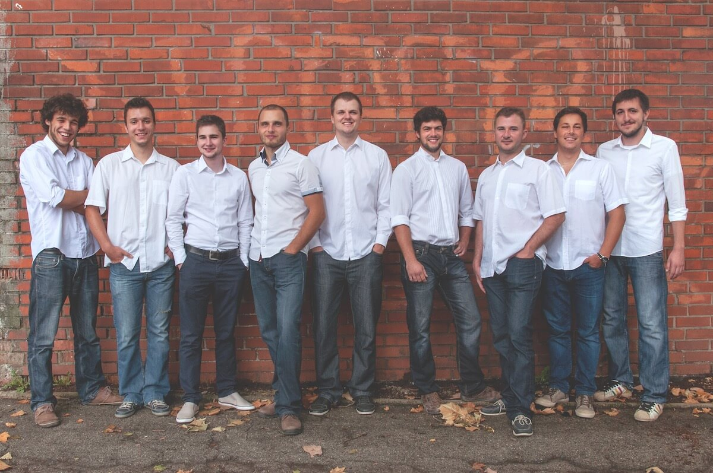

Svoboda!?

Svoboda je šopek skladb, sestavljen kot svarilo in zdravilo pred zgodovinsko pozabljivostjo. V njem najdemo cvetove iz kmečkih uporov, Ilirskega kraljestva, Avstrijskega cesarstva ter z bojišč obeh svetovnih vojn. Nabrali smo jih tam, kjer so naši predniki iskali svobodo, jih zalili s svežo vodo in povezali s trakom mladosti.
Po dveh izdajah, ki sta bili zgolj malce uradnejša posnetka koncertov, smo tokrat prvič posneli pravo zgoščenko. Najprej smo nekaj mesecev spoznavali izbrani material na vajah, nato pa pet napornih snemalnih dni preživeli v prijetni akustiki stare športne dvorane Gimnazije Celje-Center.
Zdaj je izdelek končno pripravljen. Premierno ga bo mogoče dobiti na prihajajočem koncertu Na pragu svobode, kmalu zatem ga boste lahko kupili tudi v digitalni obliki.
Nastopi
Večina nastopov v prihajajočih nekaj mesecih bo osredotočena na zgoščenko Svoboda, tako da bomo peli predvsem pesmi, ki so domoljubne, partizanske, osvobodilne in kar je še podobnih svobodnih pridevnikov.
- 6. 5. ob 18. uri bomo v Celjskem domu v okviru dogodka Na pragu svobode premierno izvedli marsikatero skladbo z nove zgoščenke in slednjo tudi prvič pokazali širnemu svetu. 70. obletnico konca 2. svetovne vojne, osvoboditve Celja, Slovenije in zmage nad nacifašizmom bomo počastili skupaj z Mešanim pevskim zborom Pevskega Društva upokojencev Celje in Mladinskim pevskim zborom Osnovne šole Ljubečna.
- 9. 5. ob 10. uri nas boste lahko najprej videli na Titovem trgu v Velenju, kjer bomo ob dnevu zmage zapeli v okviru 20. Cvetličnega sejma.
- Istega dne ob 19. uri nas boste lahko slišali na drugem koncu države. V Domu na Vidmu v Ilirski Bistrici bomo gostovali na koncertu ob 30-letnici dekliške zasedbe Vox Ilirica.
Najnovejše informacije o prihajajočih nastopih lahko vedno najdete na naši Facebook strani.
Kontakt
Če bi nas radi najeli za nastop, pokličite 041708945 (Gregor) ali 040453789 (Jan). Kadarkoli nam lahko tudi pošljete e-mail ali pustite sporočilo na Facebook strani.
